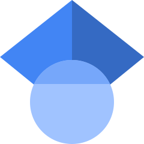

Å# Publications
 Visit the Google Scholar site for Prof Gostick and the PMEAL Team
Pre-Prints
| 01 | Agravante GJ, Gostick JT^. Simulating Transient Pore-Scale Behaviour of Platinum Degradation in PEM Fuel Cells Using Pore Network Modeling. Link: ChemArxiv |
In Press
| 01 | McKague M*, Fathiannasab H, Sadeghi MA, Gostick JT^. MAGNET: Medial Axis Guided Network Extraction Tool. |
2025
| 108 |
Maier L, Pauly L, Gostick JT, Gresser GT, Nieken U. Spontaneous imbibition in thin anisotropic fibrous media: Experiments and numerical modeling. Textile Research Journal. 95 (9-10), 937-955 (2025) Links: Publisher Site |
| 107 |
Burton N, Abdala A, Ghanbari S, Grishkewich N, Chekini M, Zarshenas K, Gostick JT, Pope M. Mass Transport Limitations in High-Performance Water-Vapor Selective Membranes: A Multiphysics Simulation Approach. Chemical Engineering Journal. 508(3), 160974 (2025) Links: Publisher Site (Open Access) |
| 106 |
Yu H, Pritzker MD, Gostick JT. Improving Performance of Hybrid Zn-Ce Redox Flow Battery by Controlling Ion Crossover and Use of Mixed Acid Positive Electrolyte. Journal of Applied Electrochemistry. 55(3), 565–582 (2025) Links: Preprint on ResearchSquare | Publisher Site (Open Access) |
| 105 |
Yeetsorn R, Chitvuttichot S, Tuantranont A, Treeratanaphitak T, Gostick JT. Development of 3D-printed electrodes using polyacrylonitrile/ graphene composites for application in polysulfide bromide flow battery. Chemical Engineering and Processing - Process Intensification. 211(5), 110233 (2025) Links: Publisher Site |
2024
| 104 |
Lee KM, Alizadeh M, Suzuki T, Tsushima S, Roberts EPL, Gostick JT. Multiphysics Simulation of Multi-layered Fibrous Electrodes for the Vanadium Redox Flow Battery. Journal of the Electrochemical Society. 171(9) 090534. (2024) |
| 103 |
Rahman Y, Gostick JT, Ioannidis MA. Nanoparticle Transport in Partially Saturated Porous Media: Attachment at Fluid Interfaces. Advances in Water Resources. 193(11), 104816 (2024) Links: Publisher Site |
| 102 |
Gostick JT, Misaghian N, Irannezhad A, Zhao B. A computationally efficient queue-based algorithm for simulating volume-controlled drainage under the influence of gravity on volumetric images. Advances in Water Resources. 193(11) 104799 (2024) |
| 101 |
Alizadeh, M, Gostick JT, Suzuki T, Tsushima S. Topological optimization for tailored designs of advection-diffusion-reaction porous reactors based on pore scale modeling and simulation. Computers & Structures. 301(9), 107452 (2024) Links: Publisher Site | Preprint on ChemarXiv |
| 100 |
Bell E, Morris DRP, Sadeghi MA, Gostick JT. BEaTmap: Simplified rigorous BET analysis of isothermal adsorption data. Journal of Open Research Software. 12(1), 5-12 (2024) Links: Publisher Site (Open Access) |
| 99 |
Ly S, Sadeghi MA, Misaghian N, Fathiannasab H, Gostick JT. Rapid prediction of particle-scale state-of-lithiation in Li-ion battery microstructures using convolutional neural networks. Applied Energy. 360, 122803 (2024) Links: Publisher Site (Open Access) |
| 98 |
Khan ZA, Gostick JT. Enhancing Pore Network Extraction Performance via Seed-Based Pore Region Growing Segmentation. Advances in Water Resources. 183(1), 104591 (2024) Links: Publisher Site |
| 97 |
Burton N, Abdala A, Zarshenas K, Ghanbari S, Somvanshi C, Gostick JT, Pope MA. Unleashing the Potential of Scalable, High-Water Vapour Permeance Graphene Oxide Membranes using Electrospun Supports. Journal of Membrane Science. 690(1), 122142 (2024) Links: Publisher Site |
| 96 |
Sadeghi MA, Khan ZA, Agnaou M, Hu L, Litster S, Kongkanand A, Padgett E, Muller DA, Friscic T, Gostick JT*. Predicting PEMFC performance from a volumetric image of catalyst layer structure using pore network modeling. Applied Energy. 353(A), 122004 (2024) Links: Publisher Site |
2023
| 95 |
Olbrich W, Kadyk T, Sauter U, Eikerling M, Gostick JT. Structure and Conductivity of Ionomer in PEM Fuel Cell Catalyst Layers: A Model-Based Analysis. Scientific Reports. 13(1), 14127 (2023) |
| 94 |
Rodriguez de Castro A, Agnaou M, Gostick JT*. Predicting Shear-Thinning Fluid Flows in Porous Media Using Pore Network Modeling: Simulations and Experimental Validation. Transport in Porous Media. 149, 453–478 (2023) Links: Publisher Site |
| 93 |
Misaghian N, Sadeghi MA, Lee KY, Roberts EPL, and Gostick JT*. Utilizing Pore Network Modeling for Performance Analysis of Multi-Layer Electrodes in Vanadium Redox Flow Batteries. Journal of The Electrochemical Society, 170(7) 070520 (2023). Links: Publisher Site |
| 92 |
Lee KM, Pahlevaninezhad M, Smith V, Abouali S, Orfino FP, Kjeang E, Pope M, Roberts E, Gostick JT*. Improvement of vanadium redox flow battery performance obtained by compression and laser perforation of electrospun electrodes. Materials Today Energy. 35, 101333 (2023). Links: Publisher Site |
| 91 |
Ghanbari S, Golmohammadi M, Gostick JT*. Computational Analysis of Citric Acid Pertraction in Emulsion Liquid Membranes. Canadian Journal of Chemical Engineering. 101(6), 3607-3623 (2023). Links: Publisher Site |
| 90 |
Yu H, Pritzker M, Gostick JT. Use of Mixed Methanesulfonic Acid/Sulfuric Acid as Positive Supporting Electrolyte in Zn-Ce Redox Flow Battery. Journal of the Electrochemical Society. 170(2), 020536 (2023). Links: Publisher Site |
| 89 |
Kim YW, Urbina LP, Asset T, Secanell M, Atanassov P, Barralet J, Gostick JT. Insights on Designing non-PGM Catalyst Layers at Low Humidity. Journal of Power Sources. 66(4), 232741 (2023). Links: Publisher Site |
| 88 |
van Gorp R, van der Heijden M, Sadeghi MA, Gostick JT, and Forner-Cuenca A. Bottom-up design of porous electrode by combining a genetic algorithm and a pore network model. Chemical Engineering Journal. Volume 455(1), 139947 (2023) Links: Publisher Site |
2022
| 87 |
Onyu K, Yeetsorn R, Gostick JT, Chitvuttichot S. Performance Analysis and Monitoring of Vanadium Redox Flow Battery via Polarization curves. Applied Sciences. 12(22), 11702 (2022) Links: Publisher Site |
| 86 |
Misaghian N, Sadeghi MA, Roberts E, Gostick JT*. Pore network modeling of zinc-air cathodes incorporating the impact of the triple-phase boundary. Journal of the Electrochemical Society. 169(10), 100549 (2022) Links: Publisher Site |
| 85 |
Wen G, Ren B, Wang X, Luo D, Dou H, Bai Z, Gostick JT, Yu A, Chen Z, Continuous CO2 electrolysis using a CO2 exsolution-induced flow cell. Nature Energy. 7(10), 978–988 (2022) Links: Publisher Site |
| 84 |
Sánchez-Ramos A, Gostick JT, García-Salaberri PA. Modeling the Effect of Low Pt loading Cathode Catalyst Layer in Polymer Electrolyte Fuel Cells. Part II: Parametric Analysis. Journal of the Electrochemical Society. 169(7), 074503 (2022) Links: Publisher Site |
| 83 |
Onyu K, Yeetsorn R, Gostick JT, Fabrication of Bipolar Plates from Thermoplastic Elastomer Composites for Vanadium Redox Flow Battery. Polymers. 14(11), 2143 (2022) Links: Publisher Site |
| 82 |
McKague MG, Fathiannasab H, Agnaou M, Sadeghi MA, Gostick JT*, Extending pore network models to include electrical double layer effects in micropores for studying capacitive deionization. Desalination. 535, 115784 (2022). Links: Publisher Site |
| 81 |
van der Heijden M, van Gorp R, Sadeghi MA, Gostick JT, and Forner-Cuenca A, Assessing the versatility and robustness of pore network modelling to simulate redox flow battery electrode performance. Journal of the Electrochemical Society. 169(4), 040505 (2022) Links: Publisher Site |
| 80 |
Kabernick D, Gostick JT, Ward V, Kinetic characterization and modelling of sequentially entrapped enzymes in 3D-printed PMMA microfluidic reactors for the synthesis of amorphadiene via the isopentenol utilization pathway. Biotechnology & Bioengineering. 119(5), 1239-1251 (2022) Links: Publisher Site |
| 79 |
Chadwick EA, Hammen LH, Schulz VP, Bazylak A, Ioannidis MA, Gostick JT*. Incorporating the effect of gravity into image-based drainage simulations on volumetric images of porous media. Water Resources Research. 58(3), e2021WR031509 (2022) Links: Publisher Site | Post Print |
| 78 |
Misaghian N, Agnaou M, Sadeghi MA, Fathiannasab H, Hadji I, Roberts EPL, Gostick JT*, Prediction of diffusional conductance in extracted pore network models using convolutional neural networks. Computers & Geosciences. 162(May), 105086 (2022) Links: Publisher Site | Post Print |
| 77 |
Gostick JT*, Misaghian N, Yang J, Boek ES. Simulating volume-controlled invasion of a non-wetting fluid in volumetric images using basic image processing tools. Computers and the Geosciences. 158(1), 104978 (2022) Links: Publisher Site | Author Postprint |
2021
| 76 |
Sánchez-Ramos A, Gostick JT, García-Salaberri PA. Modeling the Effect of Low Pt loading Cathode Catalyst Layer in Polymer Electrolyte Fuel Cells. Part I: Model Formulation and Validation. Journal of the Electrochemical Society. 168(12), 124514 (2021) Links: Publisher Site |
| 75 |
Khan ZA, Agnaou M, Sadeghi MA, Elkamel A, Gostick JT*. Pore network modelling of galvanostatic discharge behaviour of lithium-ion battery cathodes. Journal of the Electrochemical Society. 168(7), 070534 (2021) Links: Publisher Site | Open Access PDF |
| 74 |
Jung S, Sabharwal M, Jarauta A, Wei F, Gostick J, Gingras M, Secanell M. Estimation of Relative Transport Properties in Porous Transport Layers Using Pore-Scale and Pore-Network Simulations. Journal of The Electrochemical Society. 168(6), 064501 (2021) Links: Publisher Site |
| 73 |
Pourali M, Esfahani IA, Sadeghi MA, Kim KC, Gostick JT. Simulation of methane steam reforming in a catalytic micro-reactor using a combined analytical approach and response surface methodology. International Journal of Hydrogen Energy. 46(44), 22763-22776 (2021) Links: Publisher Site |
| 72 |
Kim YW, Asset T, Wei F, Atanassov P, Secanell M, Barralet JE, and Gostick JT*. Fabrication of PGM-free Catalyst Layer with Enhanced Mass Transport Characteristics via Electrospraying Technique. Materials Today Energy. 20(June), 100641 (2021) Links: Publisher Site | Author Postprint |
| 71 |
Yadav S, Kok MDR, Forner-Cuenca A, Tenny KM, Chiang YM, Brushett FR, Jervis R, Shearing PR, Brett D, Roberts EPL, Gostick JT*. Fabrication of high surface area ribbon electrodes for use in redox flow batteries via coaxial electrospinning. Journal of Energy Storage. 33(1), 102079 (2021) Links: Publisher Site | Author Postprint |
| 70 |
Wen Y, Kok MDR, Tafoya JPV, Sobrido ABJ, Bell E, Gostick JT, Herou S, Schlee P, Titirici MM, Brett DLJ, Shearing PR, Jervis R. Electrospinning as a route to advanced materials for electrochemical devices: a review. Journal of Energy Chemistry. 59(8), 492-529 (2021) Links: Publisher Site |
2020
| 69 |
Sy S, Jiang G, Zhang J, Zarrin H, Cumberland T, Abureden S, Bell E, Gostick JT, Yu A, and Chen A. A Near-Isotropic Proton-Conducting Porous Graphene Oxide Membrane. ACS Nano. 14(11), 14947–14959 (2020). Links: Publisher Site |
| 68 |
Khan, ZA, Elkamel A, Gostick JT*, Efficient extraction of pore networks from massive tomograms via geometric domain decomposition. Advances in Water Resources. 145(Nov), 103734 (2020). Links: Publisher Site | Author Postprint |
| 67 |
Tranter T, Boillat P, Mularczyk A, Manzi-Orezzoli V, Shearing P, Brett D, Eller J, Gostick JT, Forner-Cuenca A, Pore network modelling of capillary transport and relative diffusivity in gas diffusion layers with patterned wettability. Journal of the Electrochemical Society. 167(11), 114512 (2020). Links: Publisher Site |
| 66 |
Wen G, Ren B, Park MG, Yang J, Dou H, Zhang Z, Deng Y-P, Bai Z, Yang L, Gostick JT, Botton GA, Hu Y, Chen Z, Ternary Sn‐Ti‐O Electrocatalyst Boosts the Stability and Energy Efficiency of CO2 Reduction. Angewandte Chemie. 59(31), 12860-12867 (2020) Links: Publisher Site |
| 65 |
Wen G, Sarish R, Tranter TG, Ghosh D, Chen Z, Gostick JT*, Pope MA, Insights into multiphase reactions during self-discharge of Li-S batteries. Chemistry of Materials. 32(11), 4518–4526 (2020) Links: Publisher Site | Author Postprint | Supplemental Information |
| 64 |
Amini K, Gostick JT, Pritzker MD, Metal and Metal Oxide Electrocatalysts for Redox Flow Batteries. Advanced Functional Materials. 30(23), 1910564 (2020) Links: Publisher Site | Author Postprint |
| 63 |
Agnaou M, Sadeghi MA, Tranter TG, Gostick, JT*. Modeling Transport of Charged Species in Pore Networks: Solution of the Nernst-Planck Equations Coupled with Fluid Flow and Charge Conservation Equations. Computers and Geosciences. 140(6), 104505 (2020) Links: Publisher Site | Arxiv Preprint |
| 62 |
Khan ZA, García-Salaberri PA, Heenan T, Jervis R, Shearing P, Brett D, Elkamel A, Gostick JT*, Probing the structure-performance relationship of lithium-ion battery cathodes using pore-networks extracted from three-phase tomograms. Journal of the Electrochemical Society. 167(4), 040528 (2020) Links: Publisher Site | Author Postprint |
| 61 |
Sadeghnejad S, Gostick JT, Multi-scale reconstruction of vuggy carbonates by pore network modeling and image-based technique. SPE Journal. 25(1), 198902-PA (2020) Links: Publisher Site |
| 60 |
Sadeghi, MA, Agnaou M, Barralet JE, Gostick JT*, Dispersion modeling in pore networks: A comparison of common pore-scale models and alternative approaches. Journal of Contaminant Hydrology. 228(1), 103578 (2020) Links: Publisher Site | Author Postprint |
2019
| 59 |
Zhang Z, Sadeghi MA, Jervis R, Ye S, Gostick JT, Barralet JE, Merle G, Tailoring Carbon Nanotube Microsphere Architectures with Controlled Porosity. Advanced Functional Materials. 29(42), 1903983, (2019). Links: Publisher Site |
| 58 |
Zhang Z, Sadeghi MA, Brodusch N, Gauvin R, Ye S, Gostick, JT, Merle G, Barralet JE, Selective exposure of platinum catalyst embedded in protective oxide layer on conductive titanium carbide support. Materials Today - Energy. 13(5), 353-361, (2019) Links: Publisher Site |
| 57 |
Tranter TG, Kok MDR, Lam M, Gostick JT*, PyTrax: A vectorized and parallelized random walk implementation for calculating the tortuosity of volumetric images. SoftwareX. 10(July-Dec), 100277 (2019) Links: Publisher Site | Open Access PDF |
| 56 |
Sadeghi MA, Agnaou M, Kok M, Aghighi M, Merle G, Barralet JE, Gostick JT*, The interplay between microstructure, transport properties, and kinetics in flow battery electrodes: a pore network modeling study. Journal of the Electrochemical Society, 66(10), A2121-A2130 (2019) Links: Publisher Site | Open Access PDF |
| 55 |
Gostick JT*, Khan ZA, Tranter TG, Kok MDR, Agnaou M, Sadeghi MA, and Jervis R, PoreSpy: A Python Toolkit for Quantitative Analysis of Porous Media Images. The Journal of Open Source Software, 4(37), 1296 (2019) Links: Publisher Site | Open Access PDF |
| 54 |
Tranter TG, Tam M, and Gostick JT*, The effect of cracks on the in-plane electrical conductivity of PEFC catalyst layers. Electroanalysis. 31(4), 619-623 (2019) Links: Publisher Site | Author Postprint |
| 53 |
Kok MDR, Jervis R, Tranter TG, Sadeghi MA, Brett DJ, Shearing PR, and Gostick JT*, Mass Transfer in Fibrous Media with Varying Anisotropy for Flow Battery Electrodes: Direct Numerical Simulations with 3D X-ray Computed Tomography. Chemical Engineering Science. 196, 104-115 (2019) Links: Publisher Site | Author Postprint |
| 52 |
Khan ZA, Tranter TG, Agnaou M, Elkamel A, and Gostick JT*, Dual network extraction algorithm to investigate multiple transport processes in porous materials: Image-based modeling of pore and grain-scale processes. Computers and Chemical Engineering. 123(6), 64-77 (2019) Links: Publisher Site | Author Postprint |
| 51 |
Garcia-Salaberri, PA, Zenyuk I, Hwang G, Vera M, Weber AZ, Gostick JT, Implications of Inherent Inhomogeneities in Thin Carbon Fiber-Based Gas-Diffusion Layers: A Comparative Modeling Study. Electrochimica Acta. 295, 861-874 (2019) Links: Publisher Site |
| 50 |
Kim YW, Gostick JT*, Measuring Effective Diffusivity in Porous Media with a Gasket-Free, Radial Arrangement. International Journal of Heat and Mass Transfer. 129(2), 1023-1030 (2019) Links: Publisher Site | Author Postprint |
2018
| 49 |
Jervis R, Kok MDR, Montagut J, Gostick JT, Brett DJL, Shearing PR, X-ray Nano Computed Tomography of Electrospun Fibrous Mats as Flow Battery Electrodes. Energy Technology. 6(12), 2488-2500 (2018). Links: Publisher Site |
| 48 |
Glembockyte V, Frenette M, Mottillo C, Durantini A, Gostick JT, Strukil V, Friscic T, Cosa G, Highly Photostable and Fluorescent Microporous Solids Prepared via Solid-state Entrapment of BODIPY Dyes in a Nascent Metal-Organic Framework. Journal of the American Chemical Society. 140(49), 16882-16887 (2018) Links: Publisher Site |
| 47 |
Fraser A, Zhang Z, Merle G, Gbureck U, Ye S, Gostick JT, Barralet JE, Composite Carbon Nanotube Microsphere Coatings for Use as Electrode Supports. Advanced Functional Materials. 28(46), 1803713 (2018) Links: Publisher Site |
| 46 |
Wen G, Lee DU, Ren B, Hassan FM, Jiang J, Cano ZP, Gostick JT, Croiset E, Bai Z, Yang L, Chen Z, Orbital Interactions in Bi‐Sn Bimetallic Electrocatalysts for Highly Selective Electrochemical CO2 Reduction toward Formate Production. Advanced Energy Materials. 8(31), 1802427 (2018). Links: Publisher Site |
| 45 |
Fraser A, Zhang Z, Merle G, Gostick JG, Barralet JE, Powder Conductivity Assessment Using a Disposable 3D Printed Device. Electroanalysis. 30(9), 1897-1901 (2018). Links: Publisher Site |
| 44 |
Jervis, R, Meyer Q, Kok MDR, Brown L, Iacoviello F, Brett D, Neville T, Shearing P, and Gostick JT, In situ Compression and X-ray Computed Tomography of Flow Battery Electrodes. Journal of Energy Chemistry. 27(5), 1353-1361 (2018). Links: Publisher Site |
| 43 |
Garcia-Salaberri PA, Zenyuk I, Shum A, Hwang G, Vera M, Weber AZ, and Gostick JT., Analysis of representative elementary volume and through-plane regional characteristics of carbon-fiber papers: diffusivity, permeability and electrical/thermal conductivity. International Journal of Heat and Mass Transfer. 127(B), 687-703 (2018). Links: Publisher Site |
| 42 |
Sabharwal M, Gostick JT, Secanell M, Virtual Liquid Water Intrusion in Fuel Cell Gas Diffusion Media. Journal of the Electrochemical Society. 165(7), F553-F563 (2018) Links: Publisher Site | Open Access PDF |
| 41 |
Kok MDR, Jervis R, Shearing PR, Brett D, Gostick JT*, Insights into the Effect of Structural Heterogeneity in Carbonized Electrospun Fibrous Mats for Flow Battery Electrodes by X-Ray Tomography. Small. 14(9), 1703616 (2018) Links: Publisher Site | Author Postprint |
| 40 |
Tranter TF, Burns A, Gale W, Gostick JT*, Pore network modeling of capillary hysteresis in neutrally wettable fibrous media. Transport in Porous Media. 121(3), 597–620 (2018) Links: Publisher Site | Open Access PDF |
| 39 |
Moosavi SM, Niffeler M, Gostick JT, Haussener S, Transport characteristics of saturated gas diffusion layers treated with hydrophobic coatings. Chemical Engineering Science. 172(2), 503-514 (2018) Links: Publisher Site |
2017
| 38 |
Aghighi, M., J. Gostick*, Pore network modeling of phase change in PEM fuel cell fibrous cathode. Journal of Applied Electrochemistry. 47(12), 1323–1338 (2017) Links: Publisher Site | Author Postprint |
| 37 |
Sadeghi, M. A., Aghighi, M., Barralet, J. & Gostick, J. T.*, Pore network modeling of reaction-diffusion in hierarchical porous particles: The effects of microstructure. Chemical Engineering Journal 330, 1002–1011 (2017) Links: Publisher Site | Author Postprint |
| 36 |
Liu, S, MDR Kok, YW Kim, JL Baron, FR Brushett, JT Gostick*, Evaluation of Electrospun Fibrous Mats Targeted for Use as Flow Battery Electrodes. J. Electrochem. Soc. 164, A2038–A2048 (2017) Links: Publisher Site | Open Access PDF |
| 35 |
Gostick, J. T. Versatile and efficient pore network extraction method using marker-based watershed segmentation. Phys. Rev. E 96, 023307 (2017) Links: Publisher Site | Author Postprint | Source Code |
| 34 |
Hinebaugh, J., Gostick, J.T., Bazylak, A. Stochastic modeling of polymer electrolyte membrane fuel cell gas diffusion layers – Part 2: A comprehensive substrate model with pore size distribution and heterogeneity effects. International Journal of Hydrogen Energy 42, 15872–15886 (2017) Links: Publisher Site |
| 33 |
Tranter, T.G., P. Stogornyuk, J.T. Gostick, A.D. Burns, W.F. Gale, A method for measuring relative in-plane diffusivity of thin and partially saturated porous media: An application to fuel cell gas diffusion layers. International Journal of Heat and Mass Transfer. 110(July), 132–141 (2017) Links: Publisher Site | Author Postprint |
2016
| 32 |
Lopes, J., F.-X. Colson, S. Ye, J.T. Gostick, J.E. Barralet, G. Merle, Graphene modified nanosized Ag electrocomposites. Materials Research Bulletin. 89(May), 42–50 (2016) Links: Publisher Site |
| 31 |
Rashapov, R., and J. Gostick*, In-plane effective diffusivity in PEMFC gas diffusion layers. Transport in Porous Media. 115(3), 411-433 (2016) Links: Publisher Site | Author Postprint |
| 30 |
Zhang Z., J.H. Lopes, S. Ye, J. Gostick, J.E. Barralet, and G. Merle, Electrically Bloomed Platinum Nanoflowers on Exfoliated Graphene: An Efficient Alcohol Oxidation Catalyst. Journal of the Electrochemical Society. 163(10), D615-D621 (2016) Links: Publisher Site |
| 29 |
Tranter, T., J. Gostick, A. Burns, and W. Gale. Pore Network Modeling of Compressed Fuel Cell Components with OpenPNM, Fuel Cells. 16(4), p504–515 (2016) Links: Publisher Site | Author Postprint |
| 28 |
Gostick, J.*, M. Aghighi, J. Hinebaugh, T. Tranter, M.A. Hoeh, H. Day, B. Spellacy, M. Sharqawy, A. Bazylak, A. Burns, W. Lehnert and A. Putz. OpenPNM: A Pore Network Modeling Package. Computing in Science & Engineering. 18(4), p60-74 (2016) Links: Publisher Site | Author Postprint |
| 27 |
Kok, M., A. Khalifa and J. Gostick*. Multiphysics simulation of the flow battery cathode: cell architecture and electrode optimization. Journal of the Electrochemical Society. 163 (7), A1408-A1419 (2016) Links: Publisher Site | Author Postprint |
| 26 |
Aghighi M.A., M.A. Hoeh, W. Lehnert, G. Merle, and J. Gostick*, Simulation of a Full Fuel Cell Membrane Electrode Assembly Using Pore Network Modeling. Journal of the Electrochemical Society. 163(4), p.F384-392 (2016) Links: Publisher Site | Open Access PDF |
2015
| 25 |
Schalenbach, M., M.A. Hoeh, J. Gostick, W. Lueke and D. Stolten. Gas Permeation through Nafion®. Part 2: Resistor Network Model. Journal of Physical Chemistry C. 119(45), p.25156–25169 (2015) Links: Publisher Site |
| 24 |
Quesnel C., R. Cao, J. Lehr, A. Kietzig, A. Weber and J Gostick*. Dynamic Percolation Behavior in Double Layered Porous Materials. Journal of Physical Chemistry C. 119(40), p.22934–22944 (2015) Links: Publisher Site | Author Postprint |
| 23 |
Gostick, J. and A. Weber, Resistor-Network Modeling of Ionic Conduction in Polymer Electrolytes. Electrochimica Acta. 179(October), p.137-145 (2015) Links: Publisher Site | Author Postprint |
| 22 |
Lopez, J., G. Merle, S. Ye , J. Gostick, J. Barralet, Electrocatalytic oxygen reduction performance of silver nanoparticle decorated electrochemically exfoliated graphene. Langmuir. 31(35), p.9718-9727 (2015) Links: Publisher Site |
| 21 |
García-Salaberri, P.A., J. Gostick, G. Hwang, A.Z. Weber and M. Vera. Effective diffusivity in partially-saturated carbon-fiber gas diffusion layers: Effect of local saturation and application to macroscopic continuum models. Journal of Power Sources. 296: p. 440–453 (2015) Links: Publisher Site | Author Postprint |
| 20 |
García-Salaberri, P.A., G. Hwang, M. Vera, A.Z. Weber and J. Gostick*. Effective diffusivity in partially-saturated carbon-fiber gas diffusion layers: Effect of through-plane saturation distribution. International Journal of Heat and Mass Transfer. 86: p. 319–333 (2015) Links: Publisher Site | Author Postprint |
| 19 |
Rashapov, R., J. Unno and J. Gostick*, Characterization of PEMFC gas diffusion layer porosity. Journal of the Electrochemical Society. 162(1): p. F603-F612 (2015) Links: Publisher Site | Author Postprint |
| 18 |
Rashapov, R., F. Imami and J. Gostick*, Experimental method of in-plane effective diffusion coefficient measurements of porous media. International Journal of Heat and Mass Transfer. 85: p. 367-374 (2015) Links: Publisher Site | Author Postprint |
| 17 |
Kok, M.R.D., J. Gostick*, Transport properties of electrospun fibrous membranes with controlled anisotropy. Journal of Membrane Science. 1(473): p. 237-244 (2015) Links: Publisher Site | Author Postprint |
2010-2014
| 16 |
Morris, D., S. Liu, D. Villegas and J. Gostick*, Electrical conductivity of fuel cell catalyst layers under controlled relative humidity. ACS Applied Materials & Interfaces. 6(21): p. 18609–18618 (2014) Links: Publisher Site | Author Postprint |
| 15 |
Gostick, J.*, Random pore network modeling of fibrous PEMFC gas diffusion media using Voronoi and Delaunay tessellations. Journal of the Electrochemical Society. 160(8): p. F731-F743 (2013) Links: Publisher Site | Author Postprint |
| 14 |
Morris, D and J. Gostick*, Determination of the in-plane components of the electrical conductivity tensor in PEM fuel cell gas diffusion layers. Electrochimica Acta. 85(1): p. 665-673 (2012) Links: Publisher Site | Author Postprint |
| 13 |
Weber, A.Z., M.M. Mench, J.P. Meyers, P.N. Ross, J. Gostick, and Q. Liu, Redox flow batteries, a review. Journal of Applied Electrochemistry. 41(10): p. 1137-1164 (2011) Links: Publisher Site | Open Access PDF |
| 12 |
Gostick, J.* and M.A. Ioannidis, Comment on “Effect of gas diffusion layer properties on the time of breakthrough” by Shahraeeni and Hoorfar. Journal of Power Sources. 196(22): p. 9844 (2011). Links: Publisher Site |
| 11 |
Hwang, G.S., M. Kaviany, J. Gostick, B. Kientiz, A.Z. Weber, and M.H. Kim, Role of water states on water uptake and proton transport in Nafion using molecular simulations and bimodal network. Polymer. 52(12): p. 2584-2593 (2011) Links: Publisher Site |
| 10 |
Bunmark, N., S. Limtrakul, M.W. Fowler, T. Vatanatham, and J. Gostick, Assisted water management in a PEMFC with a modified flow field and its effect on performance. International Journal of Hydrogen Energy. 35(13): p. 6887-6896 (2010) Links: Publisher Site |
| 9 |
Gostick, J., M.A. Ioannidis, M.D. Pritzker, and M.W. Fowler, Impact of liquid water on reactant mass transfer in PEM fuel cell electrodes. Journal of the Electrochemical Society. 57(4): p. B563-B571 (2010) Links: Publisher Site | Author Postprint |
Before 2010
| 8 |
Gostick, J., M.A. Ioannidis, M.W. Fowler, and M.D. Pritzker, Wettability and capillary behavior of fibrous gas diffusion media for polymer electrolyte membrane fuel cells. Journal of Power Sources. 194: p. 433-444 (2009) Links: Publisher Site | Author Postprint |
| 7 |
Gostick, J., M.A. Ioannidis, M.W. Fowler, and M.D. Pritzker, On the role of the microporous layer in PEMFC operation. Electrochemistry Communications. 11(3): p. 576-579 (2009) Links: Publisher Site | Author Postprint |
| 6 |
Gostick, J., M.A. Ioannidis, M.W. Fowler, and M.D. Pritzker, Direct measurement of the capillary pressure characteristics of water-air-gas diffusion layer systems for PEM fuel cells. Electrochemistry Communications. 10: p. 1520-1523 (2008) Links: Publisher Site | Author Postprint |
| 5 |
Gostick, J., M.A. Ioannidis, M.W. Fowler, and M.D. Pritzker, Pore network modeling of fibrous gas diffusion layers for polymer electrolyte membrane fuel cells. Journal of Power Sources. 173: p. 277-290 (2007) Links: Publisher Site | Author Postprint |
| 4 |
Gostick, J., M.W. Fowler, M.D. Pritzker, M.A. Ioannidis, and L.M. Behra, In-Plane and through-plane gas permeability of carbon fiber electrode backing layers. Journal of Power Sources. 162 (1): p. 228-238 (2006) Links: Publisher Site | Author Postprint |
| 3 |
Gostick, J., M.W. Fowler, M.A. Ioannidis, M.D. Pritzker, Y.M. Volfkovich, and A. Sakars, Capillary pressure and hydrophilic porosity in gas diffusion layers for polymer electrolyte fuel cells. Journal of Power Sources. 156(2): p. 375-387 (2006) Links: Publisher Site |
| 2 |
Gostick, J., M. Pritzker, A. Lohi, and H.D. Doan, Mass transfer variation within a packed bed and its relation to liquid distribution. Chemical Engineering Journal. 100(1-3): p. 33-41 (2004) Links: Publisher Site |
| 1 |
Gostick, J., H.D. Doan, A. Lohi, and M.D. Pritzker, Investigation of Local Mass Transfer in a Packed Bed of Pall Rings Using a Limiting Current Technique. Industrial and Engineering Chemistry Research. 42(15): p. 3626-3634 (2003) Links: Publisher Site |
Book Chapters
| 6 |
Gostick JT, Kok MDR, Jervis R. Electrospun Fibrous Mats, in: Album of Porous Media. Médici, E.F., Otero, A.D. Editors. 2023, Springer. Links: Publisher Site |
| 5 |
Secannel M, Garcia-Salaberri PA, Gostick JT. Porous Electrodes for PEM Fuel Cells and Electrolyzers, in Encyclopedia of Energy Storage. M. Guarnieri, Editor. 2021. Elsevier: Amsterdam. Links: Publisher Site |
| 4 |
Amini K, Sadeghi MA, Pritzker MD and Gostick JT*, Porous Electrodes for Redox Flow Batteries, in Encyclopedia of Energy Storage. M. Guarnieri, Editor. 2021. Elsevier: Amsterdam. Links: Publisher Site |
| 3 | Gostick JT. Strain, Force, and Mass, in Experimental Methods and Instrumentation for Chemical Engineers. G. Patience, Editor. 2016. Elsevier: Amsterdam. |
| 2 | Gostick JT, Ioannidis MA, Pritzker MD, and Fowler MW. Porosimetry and Characterization of the Capillary Properties of Gas Diffusion Media, in Handbook of PEM Fuel Cell Durability, H. Wang, X.-Z. Yuan, and H. Li, Editors. 2011, Taylor Francis: Baton Rouge. |
| 1 | Gostick JT, Ioannidis MA, Pritzker MD, Fowler MW. Characterization of the Capillary Properties of Gas Diffusion Media, in Modern Aspects of Electrochemistry, C.Y. Wang and U. Pasaogullari, Editors. 2010, Springer: Berlin. |